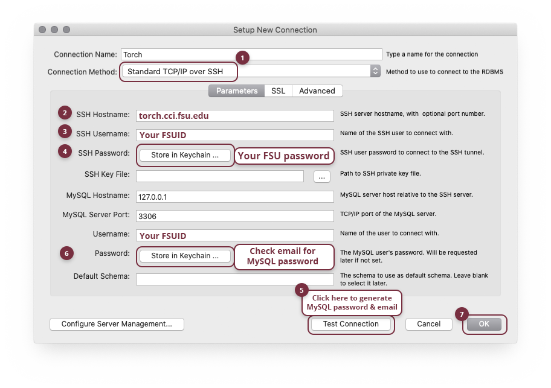

Accessing Torch
Accessing your resources on Torch is easy. Everything is automatic, as soon as your initial connection is completed.
Learn how to access TorchAccessing your resources on Torch is easy. Everything is automatic, as soon as your initial connection is completed.
Learn how to access TorchYou'll need an SFTP program like FileZilla, Cyberduck, or Transmit to upload your site to the Torch server.
Enter the following connection details to connect:
Once connected, you'll be inside your home folder. Inside this directory is a folder called public_html where you need to place your files.
Upload your HTML & CSS files inside your public_html directory. Anything published here will be available on the web.
Once your upload completes, your site is live! Visit your personalized link as seen below:
https://torch.cci.fsu.edu/~FSUID
Don't forget the tilde (~)!

Your MySQL password is separate from your FSU password. Please complete the following steps to retrieve the password for your database connection.
You'll need to download and install MySQL Workbench to connect to your database.
Be sure to keep your Workbench application up to date. Many errors and connection issues can be resolved by simply installing the latest version.
Create a new MySQL connection using the following settings:
Click the Test Connection button on the bottom of the screen to generate your MySQL username and password.
Upon a successful test SSH connection you will receive a welcome email in your student email (@my.fsu.edu). This email will contain your database name, MySQL Username and MySQL Password.
Back in MySQL Workbench, use the newly generated MySQL Username and MySQL Password to fill out the parameters in the Setup New Connection window.

If you lose your MySQL username and password, don't fret! The information is also stored securely in your home folder in the text file labeled Account Details. Use Step 1 in the "Upload your site" instructions above to access this directory via SFTP.
For help with assignments, please reach out to your instructor.
Need technical support? Contact the CCI HelpDesk at support.cci.fsu.edu or call 850-644-8108.

© College of Communication and Information at Florida State University. All rights reserved.